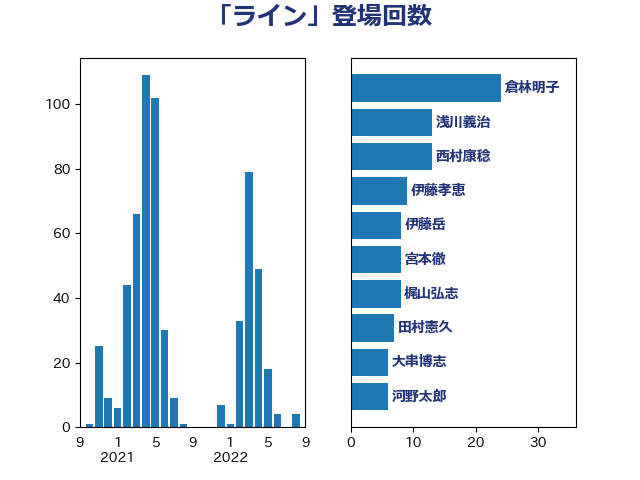

単語「ライン」

| 倉林明子 | 日本共産党 | 24 回 |
| 浅川義治 | 日本維新の会 | 13 回 |
| 西村康稔 | 自由民主党 | 13 回 |
| 伊藤孝恵 | 国民民主党 | 9 回 |
| 伊藤岳 | 日本共産党 | 8 回 |
| 宮本徹 | 日本共産党 | 8 回 |
| 梶山弘志 | 自由民主党 | 8 回 |
| 田村憲久 | 自由民主党 | 7 回 |
| 大串博志 | 立憲民主党 | 6 回 |
| 河野太郎 | 自由民主党 | 6 回 |
| 萩生田光一 | 自由民主党 | 6 回 |
| 足立康史 | 日本維新の会 | 6 回 |
| 吉良よし子 | 日本共産党 | 5 回 |
| 平井卓也 | 自由民主党 | 5 回 |
| 田村智子 | 日本共産党 | 5 回 |
| 茂木敏充 | 自由民主党 | 5 回 |
| 古賀之士 | 立憲民主党 | 4 回 |
| 奥野総一郎 | 立憲民主党 | 4 回 |
| 梅村聡 | 日本維新の会 | 4 回 |
| 櫻井周 | 立憲民主党 | 4 回 |
| 石井章 | 日本維新の会 | 4 回 |
| 福島みずほ | 社会民主党 | 4 回 |
| 稲富修二 | 立憲民主党 | 4 回 |
| 羽生田俊 | 自由民主党 | 4 回 |
| 中島克仁 | 立憲民主党 | 3 回 |
| 佐藤正久 | 自由民主党 | 3 回 |
| 大野敬太郎 | 自由民主党 | 3 回 |
| 小沢雅仁 | 立憲民主党 | 3 回 |
| 川田龍平 | 立憲民主党 | 3 回 |
| 本村伸子 | 日本共産党 | 3 回 |
| 枝野幸男 | 立憲民主党 | 3 回 |
| 柳ヶ瀬裕文 | 日本維新の会 | 3 回 |
| 沢田良 | 日本維新の会 | 3 回 |
| 礒崎哲史 | 国民民主党 | 3 回 |
| 米山隆一 | 立憲民主党 | 3 回 |
| 緑川貴士 | 立憲民主党 | 3 回 |
| 藤井比早之 | 自由民主党 | 3 回 |
| 藤巻健太 | 日本維新の会 | 3 回 |
| 高木啓 | 自由民主党 | 3 回 |
| 勝部賢志 | 立憲民主党 | 2 回 |
| 吉田統彦 | 立憲民主党 | 2 回 |
| 土田慎 | 自由民主党 | 2 回 |
| 大島敦 | 立憲民主党 | 2 回 |
| 宮本岳志 | 日本共産党 | 2 回 |
| 山岡達丸 | 立憲民主党 | 2 回 |
| 川合孝典 | 国民民主党 | 2 回 |
| 本庄知史 | 立憲民主党 | 2 回 |
| 東徹 | 日本維新の会 | 2 回 |
| 森山浩行 | 立憲民主党 | 2 回 |
| 浅野哲 | 国民民主党 | 2 回 |
| 渡辺創 | 立憲民主党 | 2 回 |
| 田島麻衣子 | 立憲民主党 | 2 回 |
| 田村まみ | 国民民主党 | 2 回 |
| 石川昭政 | 自由民主党 | 2 回 |
| 石川香織 | 立憲民主党 | 2 回 |
| 福岡資麿 | 自由民主党 | 2 回 |
| 馬場伸幸 | 日本維新の会 | 2 回 |
| 高木かおり | 日本維新の会 | 2 回 |
| 高橋千鶴子 | 日本共産党 | 2 回 |
| 高階恵美子 | 自由民主党 | 2 回 |
| ながえ孝子 | 無所属 | 1 回 |
| 三木亨 | 自由民主党 | 1 回 |
| 下野六太 | 公明党 | 1 回 |
| 中川貴元 | 自由民主党 | 1 回 |
| 中西祐介 | 自由民主党 | 1 回 |
| 丸川珠代 | 自由民主党 | 1 回 |
| 井上哲士 | 日本共産党 | 1 回 |
| 仁木博文 | 無所属 | 1 回 |
| 伊佐進一 | 公明党 | 1 回 |
| 佐藤啓 | 自由民主党 | 1 回 |
| 原口一博 | 立憲民主党 | 1 回 |
| 吉良州司 | 無所属 | 1 回 |
| 城井崇 | 立憲民主党 | 1 回 |
| 堀場幸子 | 日本維新の会 | 1 回 |
| 堤かなめ | 立憲民主党 | 1 回 |
| 塩村あやか | 立憲民主党 | 1 回 |
| 塩田博昭 | 公明党 | 1 回 |
| 大塚耕平 | 国民民主党 | 1 回 |
| 大石あきこ | れいわ新選組 | 1 回 |
| 大西健介 | 立憲民主党 | 1 回 |
| 太田房江 | 自由民主党 | 1 回 |
| 守島正 | 日本維新の会 | 1 回 |
| 宗清皇一 | 自由民主党 | 1 回 |
| 小宮山泰子 | 立憲民主党 | 1 回 |
| 小池晃 | 日本共産党 | 1 回 |
| 小沼巧 | 立憲民主党 | 1 回 |
| 小泉進次郎 | 自由民主党 | 1 回 |
| 小熊慎司 | 立憲民主党 | 1 回 |
| 小野泰輔 | 日本維新の会 | 1 回 |
| 尾崎正直 | 自由民主党 | 1 回 |
| 山下芳生 | 日本共産党 | 1 回 |
| 山口壯 | 自由民主党 | 1 回 |
| 山本左近 | 自由民主党 | 1 回 |
| 山田太郎 | 自由民主党 | 1 回 |
| 山田宏 | 自由民主党 | 1 回 |
| 山田美樹 | 自由民主党 | 1 回 |
| 山際大志郎 | 自由民主党 | 1 回 |
| 岸真紀子 | 立憲民主党 | 1 回 |
| 平木大作 | 公明党 | 1 回 |
| 後藤祐一 | 立憲民主党 | 1 回 |
| 後藤茂之 | 自由民主党 | 1 回 |
| 斎藤嘉隆 | 立憲民主党 | 1 回 |
| 日下正喜 | 公明党 | 1 回 |
| 有村治子 | 自由民主党 | 1 回 |
| 木村英子 | れいわ新選組 | 1 回 |
| 末松信介 | 自由民主党 | 1 回 |
| 末松義規 | 立憲民主党 | 1 回 |
| 本田顕子 | 自由民主党 | 1 回 |
| 杉久武 | 公明党 | 1 回 |
| 杉尾秀哉 | 立憲民主党 | 1 回 |
| 杉本和巳 | 日本維新の会 | 1 回 |
| 東国幹 | 自由民主党 | 1 回 |
| 松原仁 | 立憲民主党 | 1 回 |
| 松川るい | 自由民主党 | 1 回 |
| 林芳正 | 自由民主党 | 1 回 |
| 梅村みずほ | 日本維新の会 | 1 回 |
| 森屋宏 | 自由民主党 | 1 回 |
| 森田俊和 | 立憲民主党 | 1 回 |
| 水岡俊一 | 立憲民主党 | 1 回 |
| 河西宏一 | 公明党 | 1 回 |
| 浅田均 | 日本維新の会 | 1 回 |
| 浮島智子 | 公明党 | 1 回 |
| 清水真人 | 自由民主党 | 1 回 |
| 片山さつき | 自由民主党 | 1 回 |
| 牧山ひろえ | 立憲民主党 | 1 回 |
| 猪口邦子 | 自由民主党 | 1 回 |
| 石井苗子 | 日本維新の会 | 1 回 |
| 福山哲郎 | 立憲民主党 | 1 回 |
| 穂坂泰 | 自由民主党 | 1 回 |
| 菊田真紀子 | 立憲民主党 | 1 回 |
| 蓮舫 | 立憲民主党 | 1 回 |
| 藤田文武 | 日本維新の会 | 1 回 |
| 谷合正明 | 公明党 | 1 回 |
| 重徳和彦 | 立憲民主党 | 1 回 |
| 野田佳彦 | 立憲民主党 | 1 回 |
| 野間健 | 立憲民主党 | 1 回 |
| 金子俊平 | 自由民主党 | 1 回 |
| 鈴木宗男 | 日本維新の会 | 1 回 |
| 鈴木義弘 | 国民民主党 | 1 回 |
| 鈴木貴子 | 自由民主党 | 1 回 |
| 長妻昭 | 立憲民主党 | 1 回 |
| 長浜博行 | 無所属 | 1 回 |
| 阿部司 | 日本維新の会 | 1 回 |
| 音喜多駿 | 日本維新の会 | 1 回 |